Nhận biết tạp chí khoa học uy tín
![]()
Bài tập1
- “The International Journal of Public Healths Systems”
- Thành lập cách đây 3 tháng, công bố impact factor = 1.5
- Thời gian trung bình từ lúc nộp đến publish là 2 tuần
- Số báo mới nhất có 10 bài, tất cả tác giả đến từ Trung Quốc
- Phí nộp bài vào hệ thống (submission) là $150
- Địa chỉ email của tổng biên tập: professorliu@gmail.com
- Hỏi thêm 1 câu?
Bài tập2
- “The International Journal of Public Healths Systems”
- Thành lập cách đây 3 tháng, công bố impact factor = 1.5
- Thời gian trung bình từ lúc nộp đến publish là 2 tuần
- Số báo mới nhất có 10 bài, tất cả tác giả đến từ Trung Quốc
- Phí nộp bài vào hệ thống (submission) là $150
- Địa chỉ email của tổng biên tập: professorliu@gmail.com
- Tạp chí này có nằm trong danh mục nào không?
Mục tiêu
- Danh mục ISI, Scopus
- Impact factor
- SCImago Journal Rank
- Nhà xuất bản uy tín
- Open access
Indexing
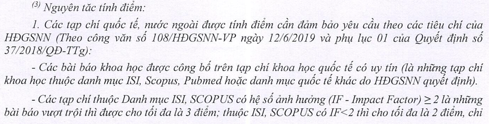
Hội đồng Giáo sư Nhà nước. Danh mục tạp chí khoa học được tính điểm năm 2023.
ISI
- Institute for Scientific Information
- Cơ sở dữ liệu tạp chí và chỉ số trích dẫn (impact factor)
- Gồm 3 phân mục:
- Science Citation Index (SCI)
- Social Sciences Citation Index (SSCI)
- Arts and Humanities Citation Index (AHCI)
Dr. Eugene Garfield (1925 - 2017)
ISI
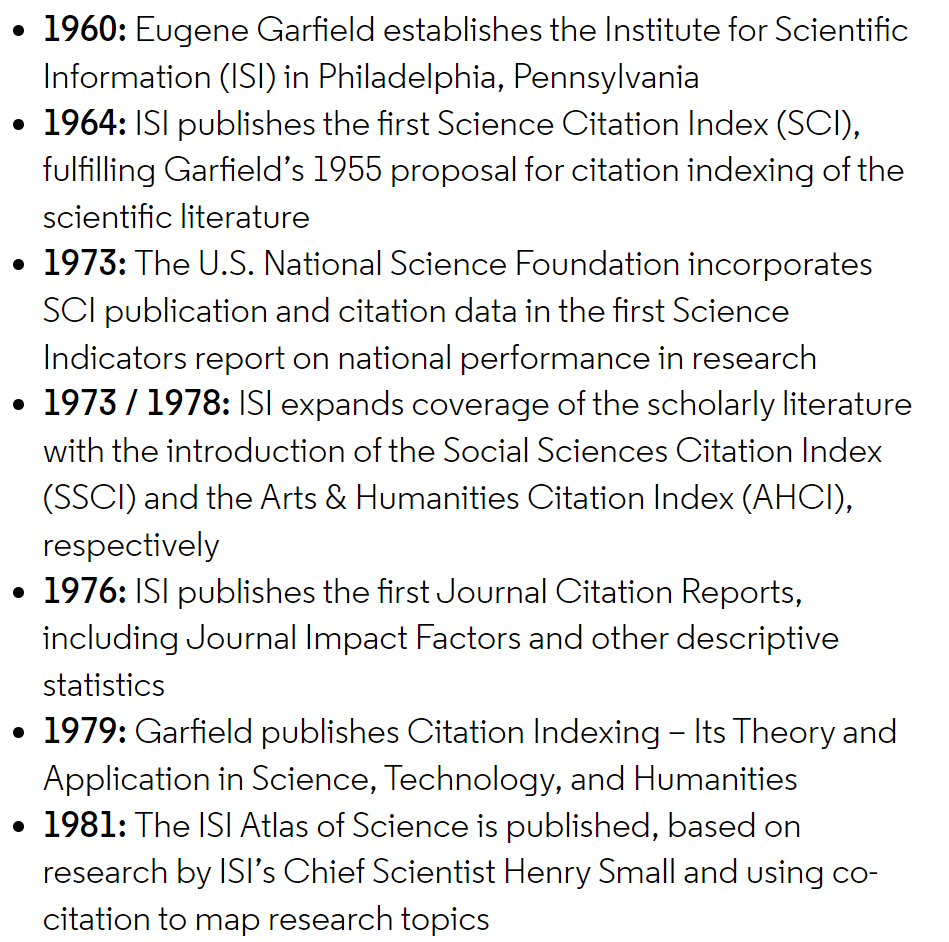
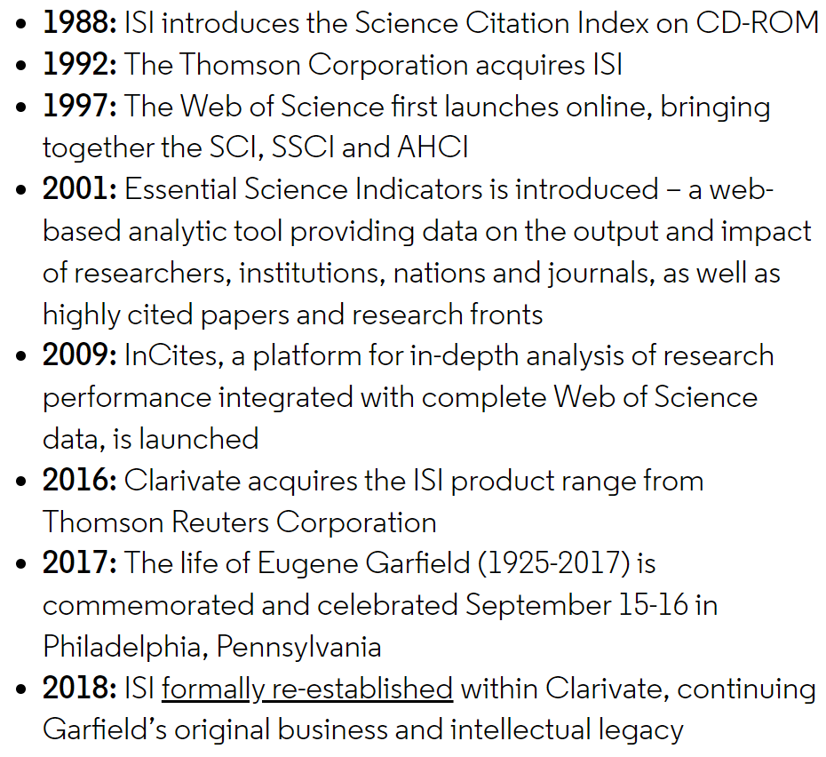
Web of Science
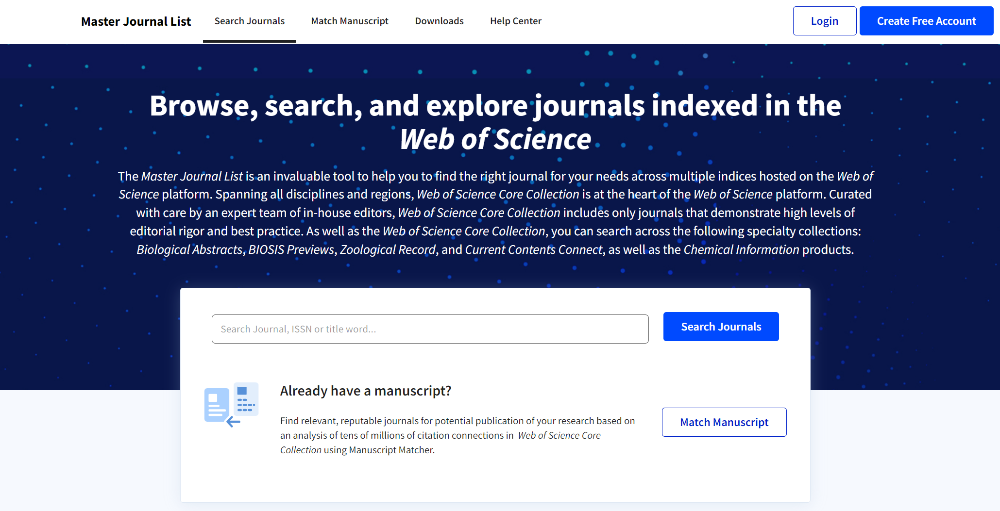
Web of Science
- Gồm 4 phân mục:
- Science Citation Index Expanded (SCIE)
- Social Sciences Citation Index (SSCI)
- Arts & Humanities Citation Index (AHCI)
- Emerging Sources Citation Index (ESCI)
Impact Factor
\[IF = \frac{\text{Tổng số trích dẫn}}{\text{Tổng số bài báo}}\]
- Tính trong 2 năm liên tiếp gần nhất (2-year Impact Factor) hoặc 5 năm liên tiếp gần nhất (5-year Impact Factor)
- Do ISI (hiện tại là Web of Science) thống kê và công bố
- Tạp chí thuộc danh mục của Web of Science mới có IF
Impact Factor
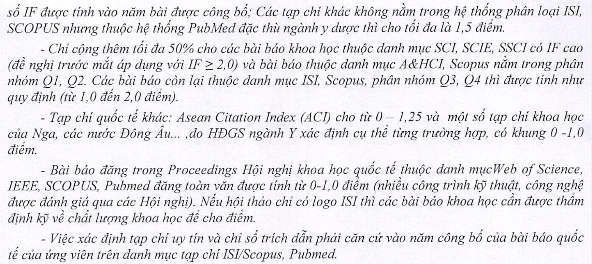
Hội đồng Giáo sư Nhà nước. Danh mục tạp chí khoa học được tính điểm năm 2023.
Scopus
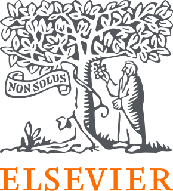
- Cơ sở dữ liệu giống như ISI
- Thuộc sở hữu của nhà xuất bản Elsevier
Scopus
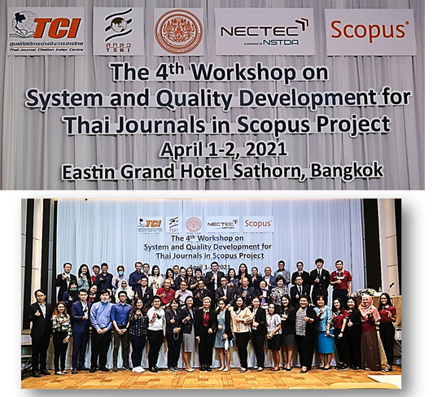
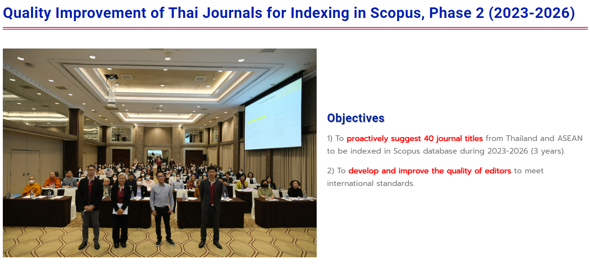
- Tiêu chuẩn vào Scopus dễ hơn ISI, nên thông thường các tạp chí phấn đấu vào Scopus trước, sau đó vào ISI
Scopus metrics
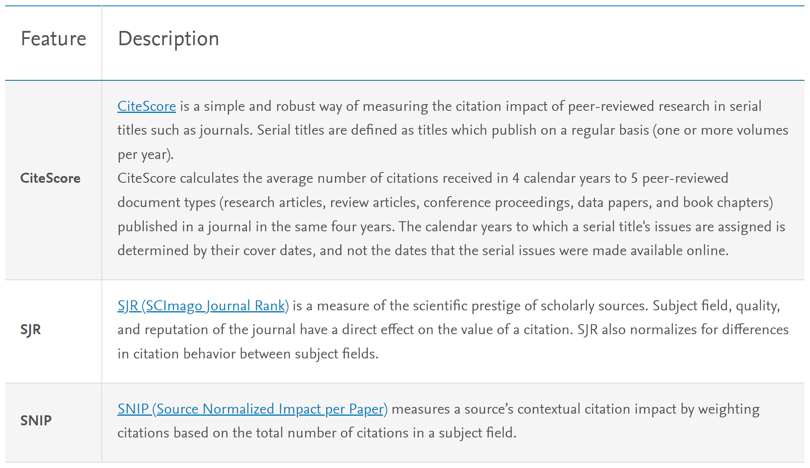
SCImago Journal Rank (SJR) (1)
- IF khác nhau giữa các chuyên ngành: tạp chí khoa học cơ bản thường IF rất cao (trung bình >4-5), tạp chí lâm sàng, y tế công cộng thấp hơn (trung bình 2-3)
- Xếp hạng IF trong cùng 1 chuyên ngành
- Q1, Q2 được xem là uy tín
SCImago Journal Rank (SJR) (2)
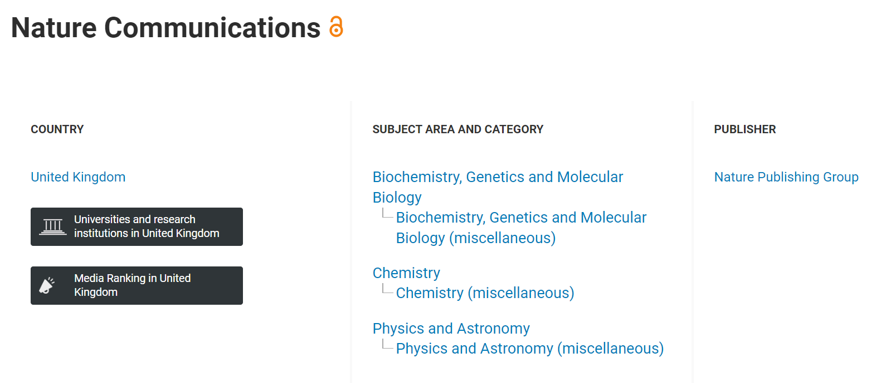
SCImago Journal Rank (SJR) (3)
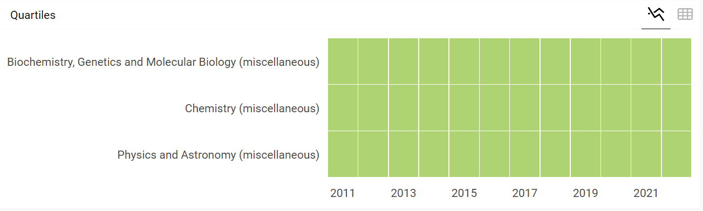
SCImago Journal Rank (SJR) (4)
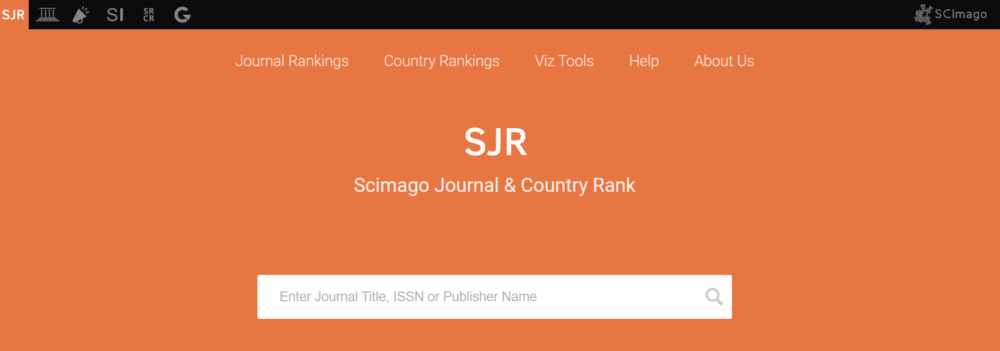
Bài tập
Tìm impact factor và journal rank của các tạp chí sau:
- The Lancet Infectious Diseases
- PLoS Neglected Tropical Diseases
- BMC Infectious Diseases
Nhà xuất bản uy tín
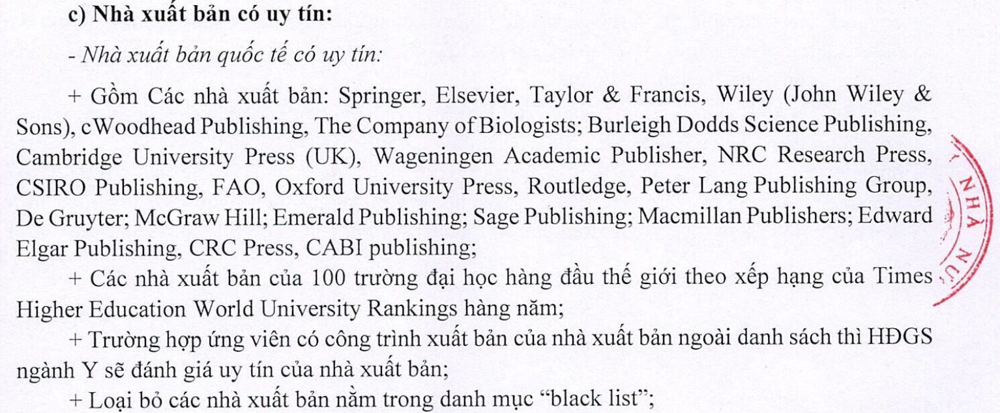
Nhà xuất bản uy tín
Nhà xuất bản uy tín
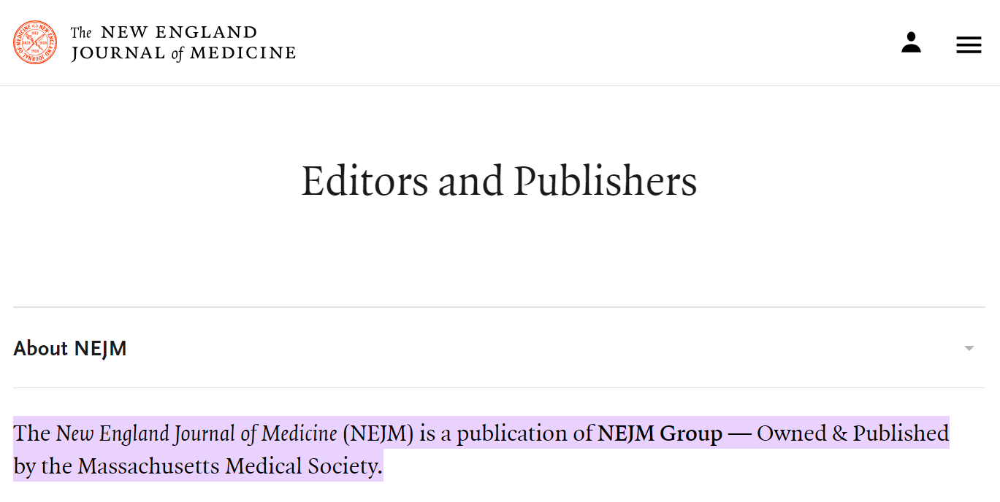
Nhà xuất bản uy tín
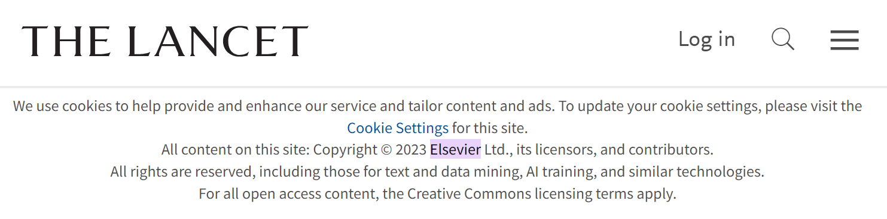
mdpi3
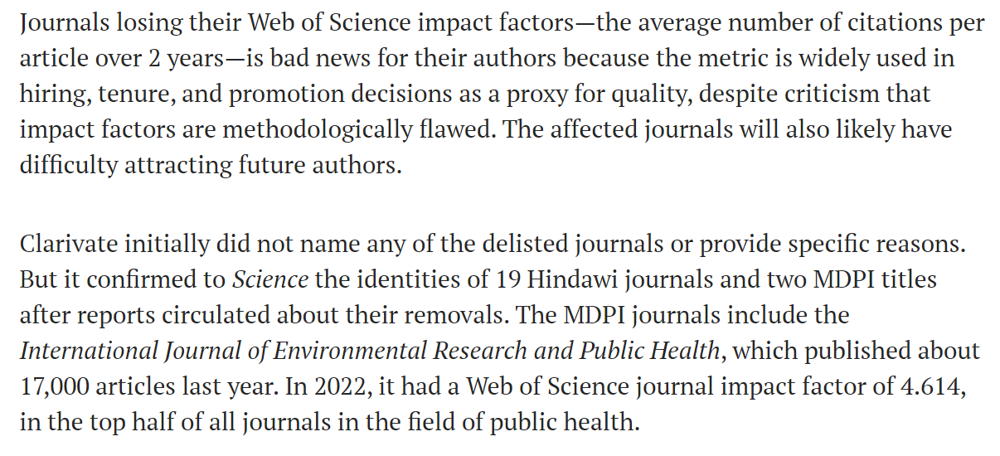
mdpi4
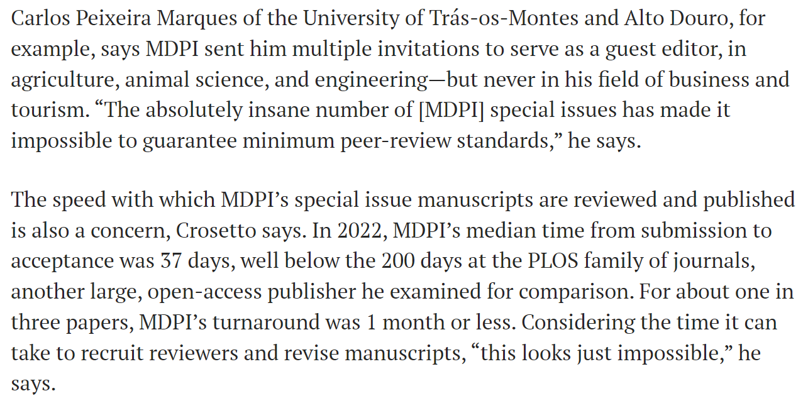
Bài tập
Tìm nhà xuất bản của các tạp chí sau
- PLoS Neglected Tropical Diseases
- BMC Infectious Diseases
Open access
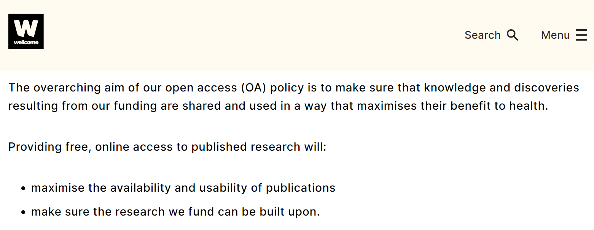
Open access
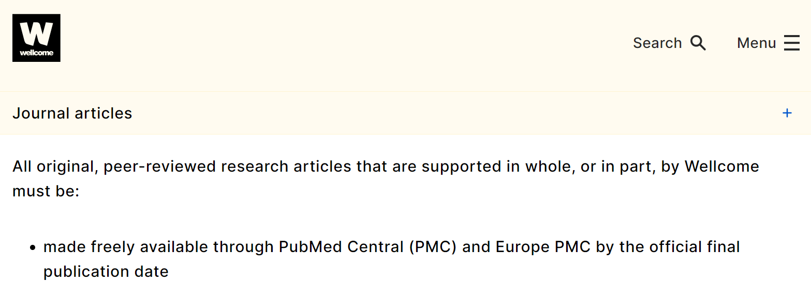
Open access
- Các nhà tài trợ khuyến khích công bố ở tạp chí open access
- Phí Article Processing Charge (APC) chỉ được thanh toán khi bài báo đã được chấp nhận đăng, không phải ở giai đoạn nộp bài (submission)
Bài tập
- “NAR Genomics & Bioinformatics”
- Thành lập cách đây 3 tháng, chưa có impact factor
- Thời gian trung bình từ lúc nộp đến publish là 8 tuần
- Số báo mới nhất có 10 bài, tác giả đến từ nhiều quốc gia khác nhau
- Không có phí nộp bài, phí open access là $2,634
- Địa chỉ email của tổng biên tập: editor@crg.eu
Bài tập
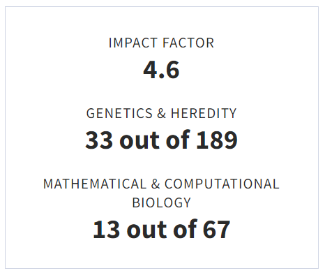
- Tạp chí con của NAR (Nucleic Acids Research, IF = 14.9)
- Thời điểm đó chưa có IF nhưng hiện tại IF = 4.6
Tóm tắt
- Danh mục ISI, Scopus
- Impact factor
- SCImago Journal Rank
- Nhà xuất bản uy tín
- Open access
Xin cảm ơn
Footnotes
Scientific Writing Workshop. Dr. Leigh Jones, Regional Academic Training Leader for OUCRU and MORU↩︎
Scientific Writing Workshop. Dr. Leigh Jones, Regional Academic Training Leader for OUCRU and MORU↩︎
Brainard J. Fast-growing open-access journals lose impact factors. Science. 2023 Mar;379(6639):1283-4.↩︎
Brainard J. Fast-growing open-access journals lose impact factors. Science. 2023 Mar;379(6639):1283-4.↩︎